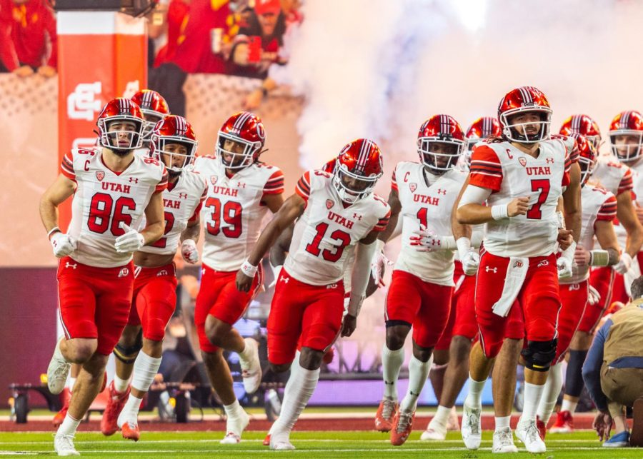
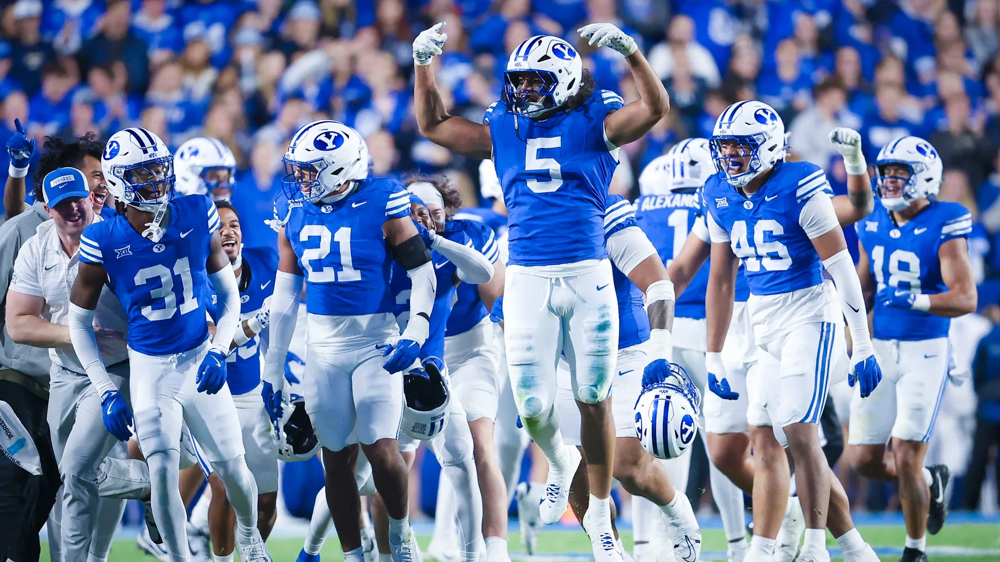
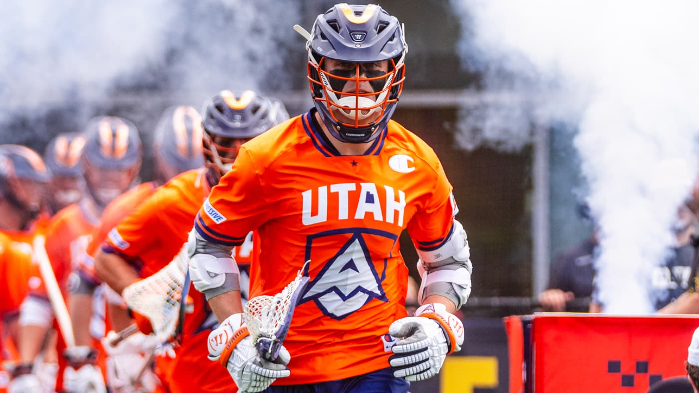
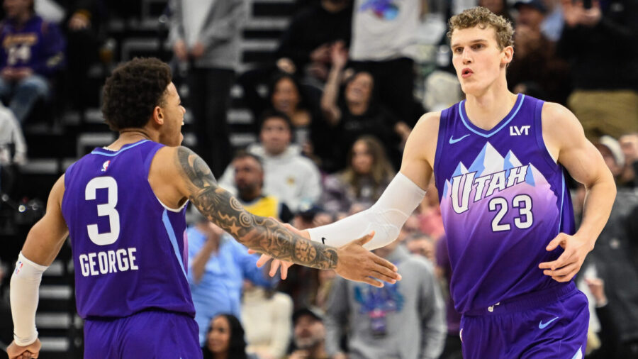
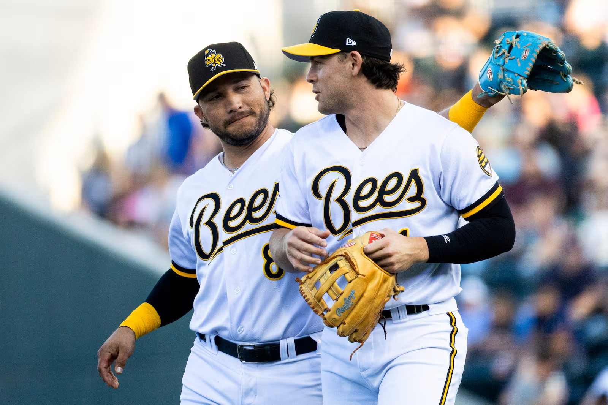
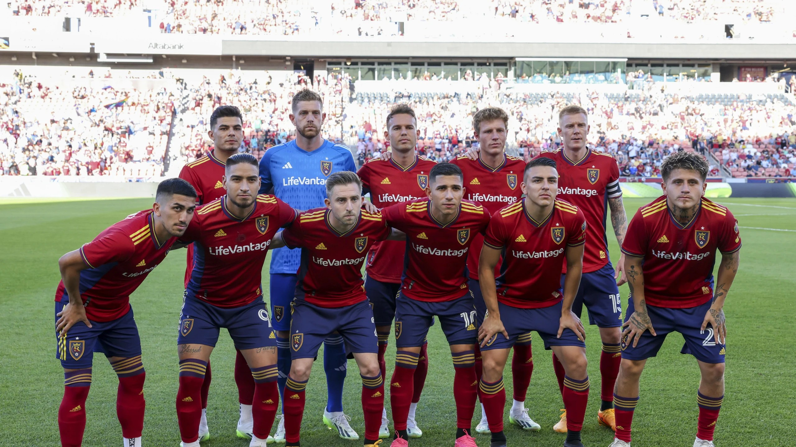
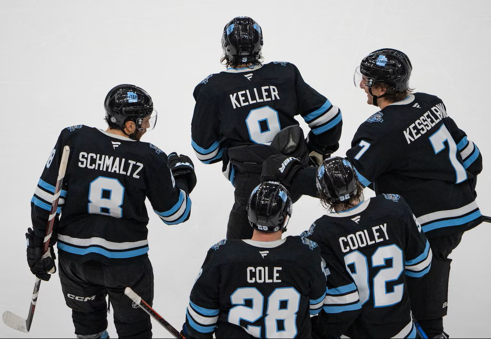
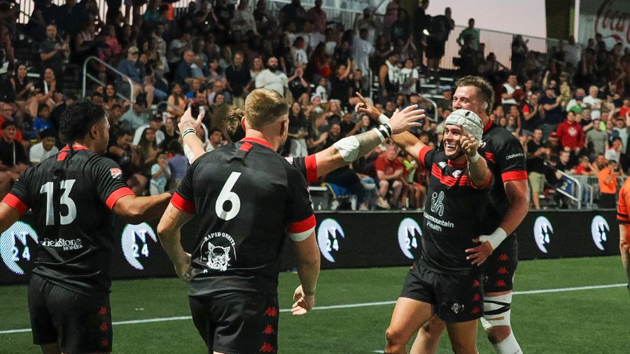

Exploring Utah Sports Teams, Venues, History, and Notable Players
Football | University of Utah Utes, NCAA | BYU Cougars, NCAA

- Venue and Notable Players:
- Rice-Eccles Stadium | Salt Lake City, Utah (1892 - Present)
- Alex Smith, Jordan Gross, Star Lotulelei
- Interesting Facts:
- BCS Busters History (2004 season)
- Utah went undefeated in 2004 (12–0) and became the first non–automatic-qualifying school to play in a Bowl Championship Series (BCS) bowl game. They capped it off by beating Pittsburgh 35–7 in the Fiesta Bowl and finished #4 in the nation. - Strong all-time winning program
- Utah has been playing football since 1892 and has built a long-term winning record of roughly 730+ wins and a winning percentage around .600 all-time. - High-Altitude Home Field Advantage
- Rice–Eccles Stadium sits at over 4,600 feet above sea level, giving Utah a physical home-field advantage as visiting teams often struggle with the thinner air.

- Venue and Notable Players:
- LaVell Edwards Stadium | Provo, Utah (1922 - Present)
- Steve Young, Ty Detmer, Jim McMahon
- Interesting Facts:
- 1984 National Championship Season
- BYU finished the 1984 season undefeated (13–0) and was awarded the national championship, making it the program’s only claimed national title. - Heisman Trophy Winner
- Quarterback Ty Detmer won the Heisman Trophy in 1990 after a record-breaking passing season, becoming one of BYU’s most accomplished players. - Quarterback U Reputation
- BYU has produced several successful NFL quarterbacks, including legends like Steve Young and Jim McMahon, helping the program earn a reputation as a “quarterback school.”
Lacrosse | Utah Archers, PLL

- Venues and Notable Players:
- Zions Bank Stadium | Herriman, Utah (2024 - Present)
- Tom Schreiber, Grant Ament, Aidan Maguire
- Interesting Facts:
- Transition to Utah-Based Identity
- The Archers Lacrosse Club became the Utah Archers as part of the Premier Lacrosse League’s shift to city-based teams, now representing Salt Lake City. - 2021 PLL Championship Winners
- The Archers won the 2021 Premier Lacrosse League championship, establishing themselves as one of the league’s top early franchises. - Elite Offensive Talent
- The team has been led by star players like Tom Schreiber, who is widely regarded as one of the best midfielders in professional lacrosse and has won league MVP honors.
Basketball | Utah Jazz, NBA

- Venue and Notable Players:
- Delta Center | Salt Lake City, Utah (1979 - Present)
- John Stockton, Karl Malone, Donovan Mitchell
- Interesting Facts:
- Stockton & Malone Era Dominance
- The Utah Jazz became a powerhouse in the 1990s behind John Stockton and Karl Malone, one of the greatest duos in NBA history, consistently reaching the playoffs and Finals contention. - Back-to-Back NBA Finals Appearances
- The Jazz reached the NBA Finals in 1997 and 1998 but lost both times to Michael Jordan and the Chicago Bulls in six games. - Consistent Small-Market Success
- Despite being a small-market team, the Jazz are known for long-term competitiveness, making the playoffs in 20 consecutive seasons from 1984 to 2003, one of the longest streaks in NBA history.
Baseball | Salt Lake Bees, MiLB

- Venue and Notable Players:
- The Ballpark at America First Square | South Jordan, Utah (1994 - Present)
- Mike Trout, Garrett Anderson, Howie Kendrick
- Interesting Facts:
- Long-Running Salt Lake Baseball Tradition
- The Salt Lake Bees are one of the oldest professional baseball franchises in the region, with roots dating back to the early 1900s and multiple name changes over their history. - Triple-A Affiliate of the Los Angeles Angels
- The Bees serve as the Triple-A Minor League affiliate of the Los Angeles Angels, meaning they are the final step for players before reaching Major League Baseball. - Home at Smith’s Ballpark
- The Bees played their home games at Smith’s Ballpark in Salt Lake City, a stadium known for its high elevation, which often leads to more offense due to thinner air.
Soccer | Real Salt Lake, MLS

- Venue and Notable Players:
- America First Field | Sandy, Utah (2005 - Present)
- Nick Rimando, Kyle Beckerman, Javier Morales
- Interesting Facts:
- 2009 MLS Cup Champions
- Real Salt Lake won the 2009 MLS Cup in a dramatic penalty shootout against LA Galaxy, becoming one of the most memorable underdog championship runs in MLS history. - First MLS Team in Utah
- Founded in 2004, Real Salt Lake began playing in Major League Soccer in 2005, becoming the first top-tier professional soccer club in the state of Utah. - Home at America First Field
- Real Salt Lake plays at America First Field in Sandy, Utah, a soccer-specific stadium known for its loud atmosphere and strong home-field advantage.
Hockey | Utah Mammoth, NHL

- Venue and Notable Players:
- Delta Center | Salt Lake City, Utah (2024 - Present)
- Clayton Keller, Mikhail Sergachev, Logan Cooley
- Interesting Facts:
- Relocated NHL Franchise to Utah
- The Utah Mammoth are the NHL franchise that relocated from Arizona to Salt Lake City, marking Utah’s return to the league with a full-time professional hockey team. - Home at the Delta Center
- The team plays at the Delta Center in downtown Salt Lake City, which is also home to the Utah Jazz and has been renovated to better accommodate hockey. - Mammoth Branding Inspired by Utah History
- The “Mammoth” identity was inspired by Ice Age mammoth fossils found in Utah, tying the team name to the state’s natural history and prehistoric discoveries.
Rugby | Utah Warriors, MLR

- Venue and Notable Players:
- Zions Bank Stadium | Herriman, Utah (2018 - 2025)
- Mike Te'o, Joe Mano, Lance Williams
- Interesting Facts:
- Major League Rugby Founding Team
- The Utah Warriors are one of the original teams in Major League Rugby, which launched in 2018 as the top-level professional rugby competition in the United States. - Home at Zions Bank Stadium
- The Warriors play their home matches at Zions Bank Stadium in Herriman, Utah, a rugby-specific venue designed to create a fast, high-energy atmosphere. - Strong Utah Rugby Community Roots
- The team benefits from Utah’s strong rugby culture, including successful youth and collegiate programs that consistently produce competitive players for the professional level.